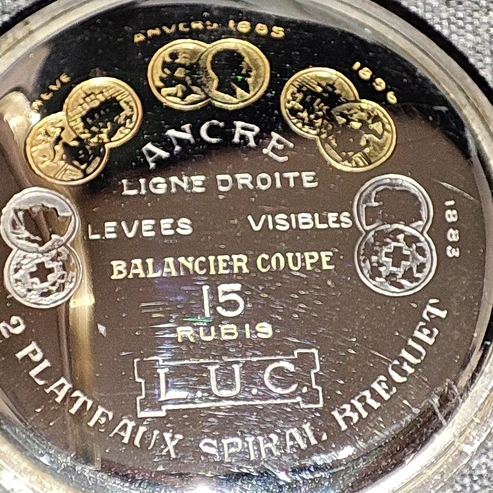
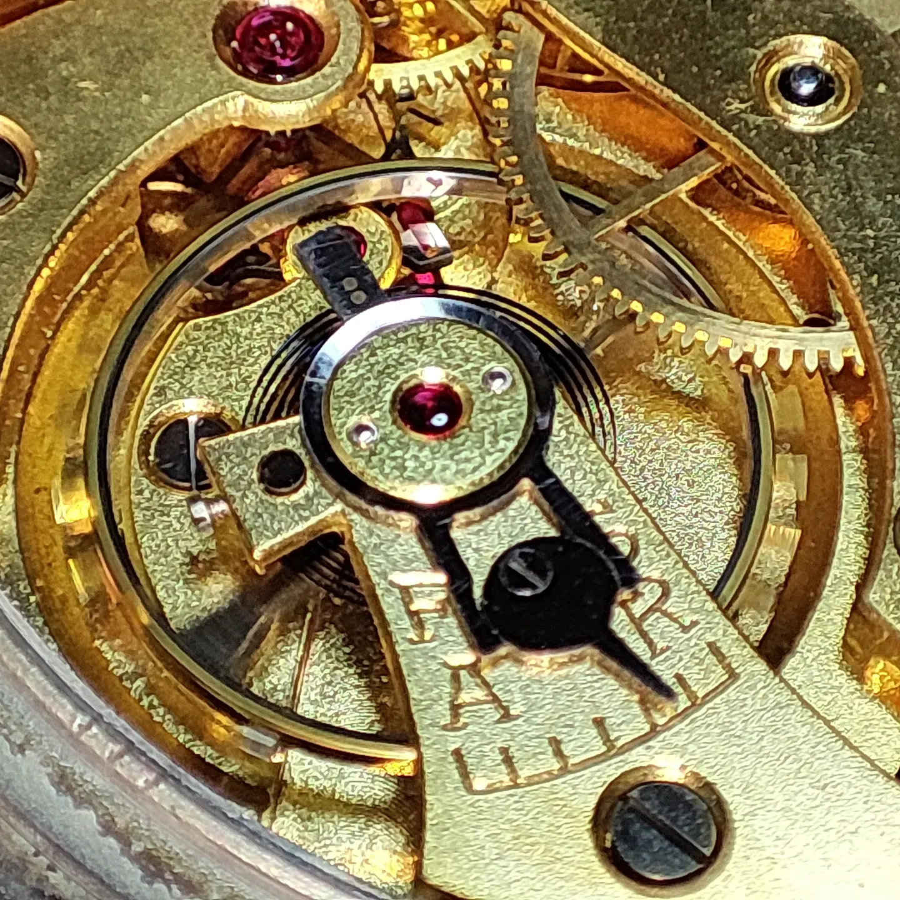

スイス時計の源流。L.U.C（ショパール）アンティーク懐中時計の修復

今回アトリエで修復を手掛けたのは、文字盤に「L.U.C」の銘を持つアンティーク懐中時計です。これは現在の高級メゾン「ショパール（Chopard）」の創業者、ルイ＝ユリス・ショパール（Louis-Ulysse Chopard）のイニシャルであり、同社の歴史の源流とも言える極めて貴重なタイムピースです。


黄金色に輝く梨地仕上げのダイヤルには、繊細なアラビアインデックスとスモールセコンドが配置されています。そして、この時計の凄みはキュベット（内蓋）を開けた時に現れます。
そこには「ANCRE LIGNE DROITE（直線レバー脱進機）」「BALANCIER COUPE（切り分銅付きバイメタル温度補正テンプ）」「15 RUBIS（15石）」「SPIRAL BREGUET（ブレゲひげゼンマイ）」など、19世紀当時の高級時計にのみ許された最高峰のスペックが誇らしく刻まれています。1885年のアントワープ万博などでの受賞メダルも、このムーブメントが当時いかに高い評価を受けていたかを物語る「歴史の証明書」です。


スイス伝統の金仕上げ（ギルト）が施されたムーブメントは、100年以上の時を経てもなお、圧倒的な美しさを放っています。文字盤下のキドニー（ツヅミ車・キチ車）周りの巻き上げ機構を見ても、現代の量産品とは異なる、手作業で削り出された分厚く堅牢なパーツで構成されていることがわかります。

マクロレンズで捉えた心臓部。テンプの受け板には「F-S（Fast-Slow）」「A-R（Avance-Retard）」の緩急針の目盛りが刻まれ、美しく輝く大きなルビーが軸を支えています。古い油を完全に除去し、ホゾ穴の一つひとつを丁寧に磨き上げ、適切な注油を行うことで、19世紀の鼓動が現代に力強く蘇りました。
偉大な時計師たちが残した歴史的遺産を、再び時を刻む「生きた機械」として後世へ繋ぐ。Atelier MUSUBIの技術者として、これ以上の喜びはありません。